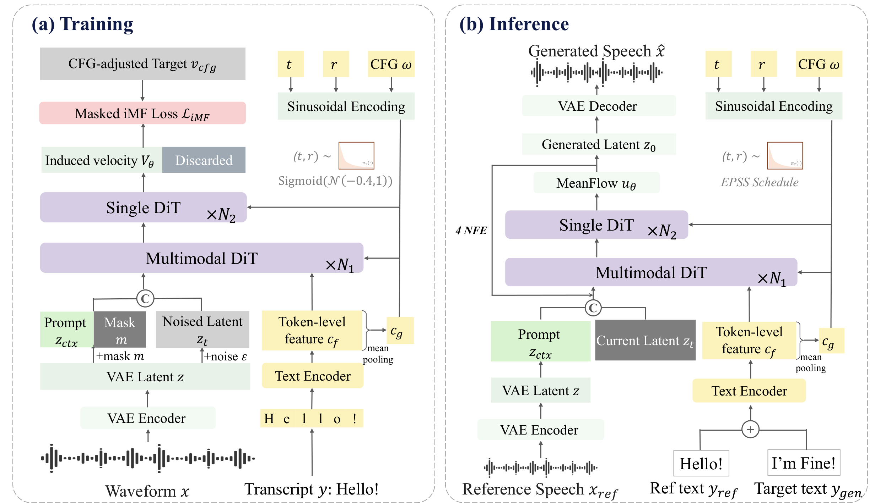

NEAT-TTS
Native and Efficient Few-Step Text-to-Speech with Group Weighted MeanFlow
Abstract: Recent years have witnessed remarkable advances in flow-based text-to-speech models, yet their inference remains prohibitively slow due to the large number of sampling steps required. Existing acceleration methods typically rely on step distillation, which increases training complexity and bounds model performance by that of a pretrained teacher. This paper presents NEAT-TTS, a native and efficient zero-shot TTS model capable of synthesizing high-fidelity speech in only four neural function evaluations (NFEs). Built upon a multimodal diffusion transformer, NEAT-TTS leverages the improved MeanFlow objective with CFG conditioning, enabling few-step speech synthesis with flexible guidance strength. We further propose Group wEighted MeanFlow Alignment (GEMA), a simple RL algorithm tailored to MeanFlow models that effectively improves few-step synthesis quality through group-relative advantage weighting. Experimental results demonstrate that NEAT-TTS matches the generation quality of distillation-based few-step models and even rivals that of multi-step models. Trained directly from scratch, NEAT-TTS achieves a WER of 1.91% and a speaker similarity of 0.69 with four steps on LibriSpeech-PC, highlighting the potential of native few-step speech generation.
Contents
This page is for research demonstration purposes only.
Model Overview

Figure 1: Overview of NEAT-TTS, a native and efficient few-step zero-shot TTS model. (a) Training with the CFG-conditioned improved MeanFlow objective; (b) four-NFE inference.
All samples in this demo page are generated with NEAT-TTS Small (121M) and Base (338M) using four NFEs, the EPSS schedule and CFG ω = 7, without any step distillation.
English Zero-shot Generation
Prompt and text from the Seed-TTS test-en set.
| Prompt | Text | NEAT-TTS Small | NEAT-TTS Base |
|---|---|---|---|
| Mrs. Travis, when I leave my kids in kindergarten, I expect you to supervise them. | |||
| However, a player may purchase as many contestants as they desire. | |||
| If possible, we'd like the papers a week before and after each of these dates please. | |||
| I still say that this John Doe person is a myth. | |||
| After I had finished the first batch of papers, I was getting into the workflow. |
Chinese Zero-shot Generation
Prompt and text from the Seed-TTS test-zh set.
| Prompt | Text | NEAT-TTS Small | NEAT-TTS Base |
|---|---|---|---|
| 哦我明白，不懂花性的人可养不好花。 | |||
| 当他们系上滑雪板，第一阵迷雾已经降下来。 | |||
| 共同建设面向未来的交通，和出行服务新生态。 | |||
| 令人可怕的描述，差不多用了十页稿纸。 | |||
| 报警人说，绑匪威胁不准报案，否则将撕票。 |
Main Results
| Model | Data (hrs) | Params | NFE | LibriSpeech-PC | Seed-TTS-en | Seed-TTS-zh | |||
|---|---|---|---|---|---|---|---|---|---|
| WER↓ | SIM-o↑ | WER↓ | SIM-o↑ | WER↓ | SIM-o↑ | ||||
| Ground Truth | – | – | – | 1.87 | 0.69 | 2.14 | 0.73 | 1.25 | 0.76 |
| VAE Reconstruction | – | – | – | 2.82 | 0.68 | 1.92 | 0.71 | 1.29 | 0.73 |
| AR & Multi-step TTS Models | |||||||||
| CosyVoice | 170K | 416M | – | – | – | 4.29 | 0.61 | 3.63 | 0.72 |
| CosyVoice 2 | 167K | 618M | – | – | – | 2.57 | 0.65 | 1.45 | 0.75 |
| Spark-TTS | 100K | 507M | – | – | – | 1.98 | 0.58 | 1.20 | 0.67 |
| E2-TTS | 100K | 333M | 32×2 | 2.95 | 0.69 | 2.19 | 0.71 | 1.97 | 0.73 |
| F5-TTS | 100K | 336M | 32×2 | 2.42 | 0.66 | 1.83 | 0.67 | 1.56 | 0.76 |
| ZipVoice | 100K | 123M | 16×2 | 1.64 | 0.67 | 1.70 | 0.70 | 1.40 | 0.75 |
| Distilled Few-step TTS Models | |||||||||
| ZipVoice-Distill | 100K | 123M | 4 | 1.51 | 0.66 | 1.64 | 0.68 | 1.39 | 0.75 |
| IntMeanFlow | 95K | 336M | 3 | – | – | 1.60 | 0.65 | 1.67 | 0.74 |
| Native Few-step TTS Models | |||||||||
| NEAT-TTS Small (Ours) | 100K | 121M | 4 | 1.87 | 0.68 | 1.38 | 0.66 | 1.42 | 0.72 |
| NEAT-TTS Base (Ours) | 100K | 338M | 4 | 1.91 | 0.69 | 1.31 | 0.68 | 1.63 | 0.74 |
Table 1: Objective evaluation results on LibriSpeech-PC and Seed-TTS. The best and second-best results are shown in bold and underlined, respectively. N×2 indicates N sampling steps with two forward passes per step for classifier-free guidance.